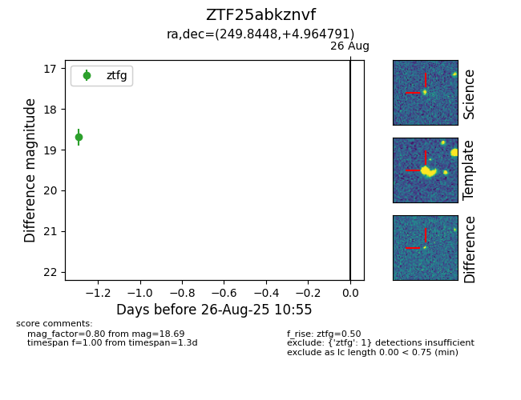

FINK: ZTF25abkznvf
Lasair: ZTF25abkznvf
ALeRCE: ZTF25abkznvf
ZTF25abkznvf (ztf,fink)
equatorial (ra, dec) = (249.8448,+4.96479)
galactic (l, b) = (21.3971,+31.50390)

last ztfg=18.69
1 ztfg detections